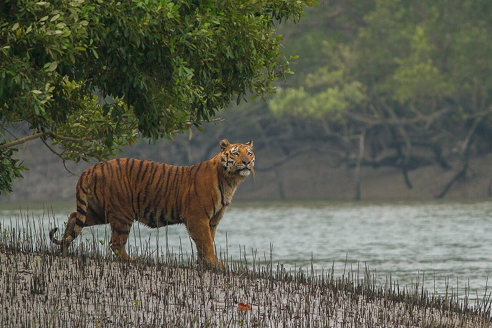

Welcome
Bangladesh is a delta country where hundreds of rivers meet the Bay of Bengal. Every region has its own scenery, from mangrove forests to hill valleys.
This website covers famous places, local culture and traditional food. To learn more about the country, read the Bangladesh page on Wikipedia.

The Sundarbans, home of the Royal Bengal Tiger
Cox's Bazar, the longest sea beach